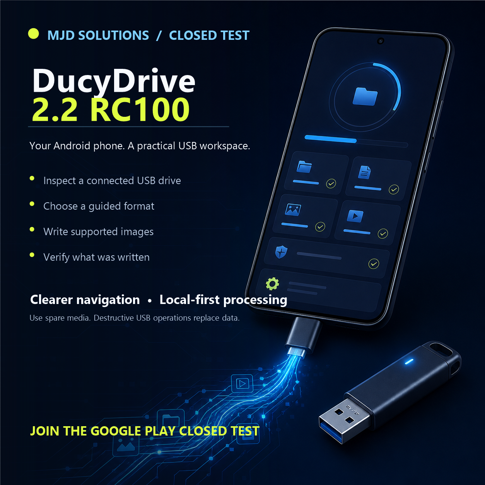

Free to download
Explore the workspace, read the guide, inspect connected storage and image details, and preview supported operations before changing a drive.
Now available on Google Play
DucyDrive AIO USB Tools brings guided USB inspection, verified imaging, boot-media preparation, testing, and recovery to compatible non-rooted Android devices.
The Play edition
DucyDrive brings a clear workspace, beginner guidance, USB reconnect records, multi-partition checks, and guided formatting and image-writing tools into one phone-first app.
USB operations can permanently change a drive. Compatibility and boot behavior depend on the image, device, adapter, and firmware. Always use spare media and keep a backup.

Straightforward access
DucyDrive has no advertisements, subscriptions, coins, credits, or recurring charges. A single Google Play purchase permanently unlocks the completed Premium tools for the purchasing Google account.
Explore the workspace, read the guide, inspect connected storage and image details, and preview supported operations before changing a drive.
Unlock completed writing, formatting, backup, recovery, testing, and other Premium tools through Google Play. Purchases can be restored through the same account.
No ads. No coins. No subscriptions. No token packs. Destructive actions still require clear confirmation and should be used with a backup.
A capable USB toolkit in your pocket
Connect a compatible USB drive to your Android device and handle common storage jobs with clear choices, safety checks, and no root access.
Review the selected device, capacity, partitions, and filesystem details before making changes.
Prepare compatible drives with supported filesystems through a guided, confirmation-based workflow.
Inspect and write supported IMG, ISO, raw DMG, Windows, Linux, rescue, and compressed images.
Prepare compatible Windows installation media with guided UEFI choices and oversized-WIM handling.
Validate source hashes, written bytes, partitions, filesystems, and EFI loader paths with precise receipts.
Follow the full in-app User Manual and plain-language guidance for every major workspace.
Recorded on a real Android device
This earlier real-device recording shows the core connected-USB workflow. The current Play edition extends the interface and verification behavior described above.
What the demonstration shows
One official destination
This public site contains the information users and platform reviewers need. Application source, signing material, license-authority keys, purchase records, and internal engineering documents are never published here.
Core image-writing capabilities
Writes raw IMG, ISO, and DMG content without replacing the source filesystem or boot records.
Reads the image back from the physical USB device and verifies its SHA-256 digest before reporting success.
Clears obsolete metadata outside smaller images and relocates a valid secondary GPT to the physical target boundary.
Decompresses gzip raw images directly into aligned USB writes without requiring a second uncompressed phone-storage file.
Resources
What the app accesses, what stays local, and how user-selected files are handled.
Read the policy →License scope, safety responsibilities, warranty limits, and acceptable use.
Review the terms →Get help without exposing private data, license files, or device identifiers.
Contact support →User-visible demonstrations of connected-device and data-transfer operations.
View demonstrations →A concise, versioned history of completed features shipped to users.
View release history →Project story & authorship
Michael Ducylowycz conceived, created, and directed DucyDrive. The product grew from more than three years of research, workflow design, technical planning, and dedicated Android engineering.
DucyDrive is 100% created and developed by Michael Ducylowycz, owner of MJD Solutions. Product decisions, requirements, architecture, engine design, implementation, validation, release authority, and proprietary ownership are entirely under Michael’s control.
Third-party platforms, libraries, trademarks, and filesystem names remain subject to their respective owners and licenses.